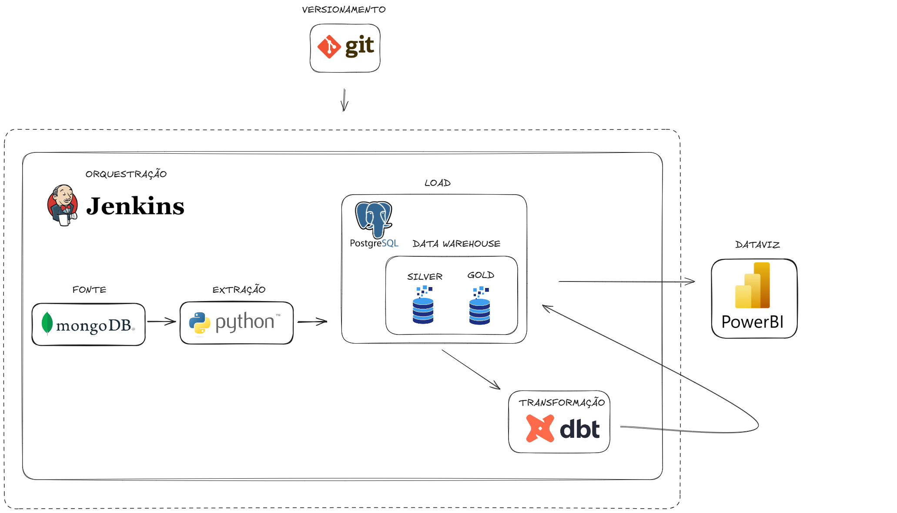

PIPELINES MONGODB¶
Objetivo¶
Visão Geral do Projeto
Este repositório contem pipelines de ETL (Extract, Transform, Load) que extraem dados de collections MongoDB e os inserem em tabelas PostgreSQL.
| Etapa | Descrição |
|---|---|
| Extração | Dados brutos de duas collections MongoDB principais |
| Transformação | Limpeza, conversões de tipos e validações independentes |
| Carga | Inserção dos dados processados em tabelas PostgreSQL |
Collections Processadas
- implementations/infos - Dados do produto/apólice
- installments/parcelas - Dados de parcelamento
Modos de Atualização
Suporte a modos: DIARIO, INCREMENTAL, FULL e DINAMICO (escolha automática)
Tecnologias e Stack¶
Os pipelines utilizam um conjunto de tecnologias modernas para garantir performance, confiabilidade e manutenibilidade:

Stack Principal¶
| Tecnologia | Descrição |
|---|---|
| Python 3.x | Linguagem principal para toda lógica de processamento |
| MongoDB | Banco de dados NoSQL de origem (collections de produção) |
| PostgreSQL | Banco de dados relacional de destino (data warehouse) |
| Pandas | Manipulação e transformação de dados em larga escala |
| Joblib | Processamento paralelo para otimização de performance |
| Pandera | Validação rigorosa de schemas e qualidade de dados |
| Poetry | Gerenciamento de dependências e ambientes virtuais |
| Jenkins | Orquestração e automação de pipelines CI/CD |
| MkDocs | Documentação técnica e manuais de usuário |
Características Técnicas¶
| Característica | Descrição |
|---|---|
| Processamento Paralelo | Utilização de múltiplos cores para otimizar performance |
| Validação de Schema | Garantia de qualidade e consistência dos dados |
| Modo Dinâmico | Escolha inteligente entre processamento incremental ou completo |
| Logs Estruturados | Monitoramento detalhado de execução e performance |
| Configuração Flexível | Suporte a múltiplos ambientes (produção/homologação) |
Como Executar¶
Referencia Rápida
Este trecho e comum a todos os produtos/pipelines deste repositório. Use-o como referencia rápida para rodar qualquer pipeline localmente.
1. Clone o repositório:
- Entre na pasta e instale dependências (Poetry):
(opcional) criar venv dentro do projeto:
-
Ajuste variáveis de ambiente conforme
.env.example. -
Exemplo de execução (modo
DINAMICO):
Observação
Cada produto tem seu main_<produto>.py.
Documentação com MkDocs¶
Esta documentação e construída com MkDocs. Para visualizar, editar ou contribuir com a documentação:
Comandos Básicos¶
-
Instalar dependências (se ainda não tiver feito):
-
Servir a documentação localmente (modo desenvolvimento):
Acesse em: http://127.0.0.1:8000
-
Servir em porta específica:
-
Build para produção:
Gera os arquivos estáticos na pasta site/
- Deploy para GitHub Pages:
Estrutura da Documentação¶
docs/
├── index.md # Página inicial
├── ferramentas.md # Documentação das ferramentas
├── sobre.md # Informações gerais
├── produtos/ # Documentação específica por produto
│ ├── disney_ap.md
│ ├── kovr_ap.md
│ └── ...
└── assets/ # Recursos (imagens, CSS, etc.)
├── images/
├── custom.css
└── logo.svg
Editando a Documentação¶
| Ação | Descrição |
|---|---|
| Arquivos Markdown | Edite os arquivos .md em docs/ |
| Configuração | Modifique mkdocs.yml para ajustar navegação, tema, etc. |
| Imagens | Adicione em docs/assets/images/ |
| Auto-reload | Com mkdocs serve ativo, as mudanças sao refletidas automaticamente |
Dica
Use mkdocs serve durante o desenvolvimento para ver as mudanças em tempo real!
Arquitetura Geral dos Pipelines¶
Visão Geral¶
Todos os produtos seguem o mesmo padrão arquitetural de ETL (Extract, Transform, Load):
- Fonte: MongoDB (produção/homologação) com duas collections principais para produtos com parcelas.
- Destino: Tabela Postgres específica por produto
Colunas Criticas Universais¶
| Coluna | Descrição |
|---|---|
uuid_bilhete |
Chave primaria universal |
_created |
Timestamp de criação |
_modified |
Timestamp de modificação |
| Coluna | Descrição |
|---|---|
uuid_parcela |
UUID único da parcela |
data_pagamento |
Data do pagamento |
data_vencimento |
Data de vencimento |
Navegação da Documentação¶
| Pagina | Descrição |
|---|---|
| Ferramentas | Módulos reutilizáveis e padrões de importação |
| Produtos | Documentação especifica de cada pipeline |
| Sobre | Informações gerais do projeto |
Estrutura Padrão
Uma collection de "implementação/infos" + uma collection de "parcelas"
Fluxo de Execução do Pipeline (main_<produto>.py)¶
Todos os pipelines seguem o mesmo fluxo de execução padronizado:
| Etapa | Descrição | Modulo/Função |
|---|---|---|
| 1. Configuração de Path | Adiciona diretório pai ao sys.path para imports |
os, sys |
| 2. Carregamento de Config | Carrega argumentos do Jenkins via CLI | load_pipeline_args() |
| 3. Log de Configuração | Imprime configurações da execução atual | print() |
| 4. Geração de Base | Identifica bilhetes a processar por tipo de atualização | gerar_base_para_busca() |
| 5. Geração de Queries | Cria pipelines MongoDB em lotes | gerar_querys_buscar_*() |
| 6. Limpeza de Stage | Remove e recria pastas temporárias | shutil.rmtree() |
| 7. Exportação Paralela | Exporta dados para CSV usando joblib | exportar_dados_csv_info_parcela() |
| 8. Remoção de Indices | Remove indices antes da carga (modo FULL) | remover_indices_postgres() |
| 9. Importação Postgres | TRUNCATE/DELETE + COPY paralelo | atualizar_tabela_postgres_arquivo() |
| 10. Criação de Indices | Recria indices apos carga (modo FULL) | criar_indices() |
Referencia
Para detalhes sobre load_pipeline_args() e constantes dos produtos, consulte Ferramentas.
Geração de Base (gerar_base_para_busca)
Filtra bilhetes por data de criação com dias retroativos configuráveis.
Processa bilhetes de uma data especifica (formato yyyy-mm-dd)
Processa apenas bilhetes modificados nos últimos N dias
Processa todos os bilhetes, independente de modificações
Escolhe automaticamente entre FULL ou INCREMENTAL baseado no percentual de modificações
Exceção: PicPay Cyber
O produto PicPay Cyber sempre utiliza modo INCREMENTAL no modo DINAMICO, ignorando o calculo de percentual de modificações.
Fluxo de Processamento¶
Diagrama de Fluxo ETL Completo
O diagrama abaixo ilustra o fluxo completo de processamento dos pipelines ETL:
flowchart TD
A["MongoDB Collections<br/>*implementations<br/>*installments"] --> B["gerar_base_para_busca"]
B --> C{"Tipo de Atualizacao"}
C -->|DINAMICO| D["Calcular % Modificações"]
C -->|DIARIO| E["Filtrar por Data Especifica"]
C -->|INCREMENTAL| F["Últimos N Dias"]
C -->|FULL| G["Todos os Bilhetes"]
D --> H{"% > Limite?"}
H -->|Sim| G
H -->|Nao| F
E --> I["Gerar Queries MongoDB"]
F --> I
G --> I
I --> I2["Limpar Pastas STAGE"]
I2 --> J["buscar_infos_bilhetes<br/>Collection Implementations"]
I2 --> K["buscar_parcelas<br/>Collection Installments"]
J --> L["DataFrame Infos<br/>pd.json_normalize"]
K --> M["DataFrame Parcelas<br/>pd.json_normalize"]
L --> N["tratamentos_df_infos<br/>ETL + Limpeza"]
M --> O["tratamentos_df_parcelas<br/>ETL + Limpeza"]
N --> P["Schema Validation Infos<br/>Pandera"]
O --> Q["Schema Validation Parcelas<br/>Pandera"]
P --> P2["Exportar CSV Infos<br/>STAGE"]
Q --> Q2["Exportar CSV Parcelas<br/>STAGE"]
P2 --> R2{"FULL?"}
Q2 --> S2{"FULL?"}
R2 -->|Sim| R3["TRUNCATE + Remover Indices"]
R2 -->|Nao| R4["DELETE registros"]
S2 -->|Sim| S3["TRUNCATE + Remover Indices"]
S2 -->|Nao| S4["DELETE registros"]
R3 --> R["PostgreSQL COPY<br/>innoveo_produto_infos"]
R4 --> R
S3 --> S["PostgreSQL COPY<br/>innoveo_produto_parcelas"]
S4 --> S
R --> T["Criar Indices Infos"]
S --> U["Criar Indices Parcelas"]
T --> V["Pipeline Concluído"]
U --> V
%% Estilos do diagrama
style A fill:#1E88E5,stroke:#1565C0,stroke-width:2px,color:#ffffff
style B fill:#7E57C2,stroke:#5E35B1,stroke-width:2px,color:#ffffff
style C fill:#FFA726,stroke:#FB8C00,stroke-width:2px,color:#ffffff
style D fill:#78909C,stroke:#546E7A,stroke-width:2px,color:#ffffff
style E fill:#78909C,stroke:#546E7A,stroke-width:2px,color:#ffffff
style F fill:#78909C,stroke:#546E7A,stroke-width:2px,color:#ffffff
style G fill:#78909C,stroke:#546E7A,stroke-width:2px,color:#ffffff
style H fill:#FFA726,stroke:#FB8C00,stroke-width:2px,color:#ffffff
style I fill:#A1887F,stroke:#795548,stroke-width:2px,color:#ffffff
style I2 fill:#FF7043,stroke:#E64A19,stroke-width:2px,color:#ffffff
style J fill:#29B6F6,stroke:#0277BD,stroke-width:2px,color:#ffffff
style K fill:#29B6F6,stroke:#0277BD,stroke-width:2px,color:#ffffff
style L fill:#FFD54F,stroke:#FBC02D,stroke-width:2px,color:#000000
style M fill:#FFD54F,stroke:#FBC02D,stroke-width:2px,color:#000000
style N fill:#EF5350,stroke:#C62828,stroke-width:2px,color:#ffffff
style O fill:#5C6BC0,stroke:#3F51B5,stroke-width:2px,color:#ffffff
style P fill:#26A69A,stroke:#00897B,stroke-width:2px,color:#ffffff
style Q fill:#9CCC65,stroke:#7CB342,stroke-width:2px,color:#000000
style P2 fill:#8D6E63,stroke:#5D4037,stroke-width:2px,color:#ffffff
style Q2 fill:#8D6E63,stroke:#5D4037,stroke-width:2px,color:#ffffff
style R2 fill:#FFA726,stroke:#FB8C00,stroke-width:2px,color:#ffffff
style S2 fill:#FFA726,stroke:#FB8C00,stroke-width:2px,color:#ffffff
style R3 fill:#EF5350,stroke:#C62828,stroke-width:2px,color:#ffffff
style R4 fill:#EF5350,stroke:#C62828,stroke-width:2px,color:#ffffff
style S3 fill:#EF5350,stroke:#C62828,stroke-width:2px,color:#ffffff
style S4 fill:#EF5350,stroke:#C62828,stroke-width:2px,color:#ffffff
style R fill:#66BB6A,stroke:#43A047,stroke-width:2px,color:#ffffff
style S fill:#66BB6A,stroke:#43A047,stroke-width:2px,color:#ffffff
style T fill:#AB47BC,stroke:#8E24AA,stroke-width:2px,color:#ffffff
style U fill:#AB47BC,stroke:#8E24AA,stroke-width:2px,color:#ffffff
style V fill:#4CAF50,stroke:#2E7D32,stroke-width:3px,color:#ffffff
Legenda do Fluxo:
| Cor | Significado |
|---|---|
| Azul | Fonte de dados (MongoDB) |
| Roxo | Processamento inicial |
| Laranja | Pontos de decisao |
| Cinza | Filtros e selecoes |
| Marrom | Geracao de queries |
| Laranja Escuro | Limpeza de pastas |
| Ciano | Busca de dados |
| Amarelo | DataFrames |
| Vermelho | Operacoes DELETE/TRUNCATE |
| Indigo | Tratamentos ETL |
| Teal | Validacao Pandera |
| Marrom Claro | Exportacao CSV |
| Verde | PostgreSQL COPY |
| Roxo Claro | Criacao de indices |
| Verde Escuro | Conclusao |
Notas Tecnicas:
- Modo DINAMICO: Avalia % de modificações para decidir entre INCREMENTAL ou FULL
- Exportacao CSV: Dados sao exportados para arquivos CSV intermediarios antes da carga
- Otimizacao de Performance: Indices removidos durante carga FULL e recriados apos
- Validacao Rigorosa: Schema Pandera em modo strict antes da exportação
Estrutura de Arquivos por Produto¶
Cada produto segue a mesma estrutura de arquivos:
produto/
├── main_produto.py # Orquestração principal
├── pipeline_produto_funcoes.py # Lógica de negócio e transformações
└── pipeline_produto_notebook.ipynb # Notebook para desenvolvimento e testes
Configuracoes Padrao¶
Variaveis Comuns (main_<produto>.py):¶
AMBIENTE_MONGO = 'PRODUCAO' # Ambiente MongoDB
QDE_DIAS_RETROATIVOS = 3 # Dias para busca incremental
PERCENTUAL_MODIFICACAO_INCREMENTAL = 40 # Limite para modo DINAMICO
TP_ATUALIZACAO = 'DINAMICO' # Tipo de atualização
QDE_BILHETES = 5000 # Lotes por query
QDE_JOBS = 30 # Paralelização
Constantes Padrao (pipeline_<produto>_funcoes.py):¶
ENCODING = 'utf-8'
SEP = '|'
EXTENSAO = 'csv'
PATH = r"E:\ARQUIVOS_MONGO\produto"
BANCO_UTILIZADO_PARA_IMPORTACAO = 'POSTGRES'
Calculo Padrao de Valor Tarifario¶
Formula Universal
O calculo do valor_tarifario se repete para todos os produtos que possuem parcelas:
# Fórmula padrão aplicada na maioria dos produtos
valor_tarifario = round((valor_parcela / 107.38) * 100, 2)
Schema e Validacao¶
Campos Padrao Obrigatorios¶
Obrigatorio
Todos os produtos devem implementar os seguintes campos no schema Pandera:
| Campo | Tipo | Obrigatório | Descrição |
|---|---|---|---|
uuid_bilhete |
str |
Sim | Identificador único do bilhete |
uuid_parcela |
str |
Sim | Identificador da parcela |
valor_parcela |
float |
Sim | Valor da parcela |
valor_tarifario |
float |
Sim | Valor tarifário calculado |
transactionid |
str |
Recomendado | ID da transação |
data_inicio_vigencia |
pd.Timestamp |
Sim | Data início da vigência |
data_fim_vigencia |
pd.Timestamp |
Sim | Data fim da vigência |
data_vencimento |
pd.Timestamp |
Sim | Data vencimento da parcela |
data_pagamento |
pd.Timestamp |
Opcional | Data do pagamento |
data_cancelamento |
pd.Timestamp |
Opcional | Data do cancelamento |
data_estorno |
pd.Timestamp |
Opcional | Data de estorno |
data_comp_vencimento |
Int64 |
Parcelas | Competência do vencimento (YYYYMM) |
data_comp_pagamento |
Int64 |
Parcelas | Competência do pagamento (YYYYMM) |
data_comp_estorno |
Int64 |
Parcelas | Competência do estorno (YYYYMM) |
Processamento de Duas Collections Separadas¶
Campos de identificacao comuns entre as collections:
| Campo (Implementações) | Campo (Parcelas) | Descrição |
|---|---|---|
_id |
_id |
UUID único do documento |
_created |
_created |
Data de criação |
_modified |
_modified |
Data de modificação |
Arquitetura de Processamento Independente
- Cada collection é processada separadamente sem operações de junção
- Campos UUID são convertidos de Binary para string via
converter_bytes_para_uuid() - Dados são inseridos em tabelas PostgreSQL distintas (
*_infose*_parcelas) - Relacionamento é mantido através de chaves UUID compartilhadas
Logs e Monitoramento¶
Logs Padrao¶
| Log | Descricao |
|---|---|
| Bilhetes | Quantidade de bilhetes processados |
| Arquivos | Quantidade de arquivos gerados |
| Progresso | Progresso do processamento paralelo |
| Atualizacao | Tipo de atualização executada |
| Modificacoes | Percentual de modificacoes (modo DINAMICO) |
Boas Praticas¶
Performance¶
| Pratica | Recomendacao |
|---|---|
| Lotes | Use lotes configuraveis (QDE_BILHETES) |
| Paralelizacao | Configure adequadamente (QDE_JOBS) |
| Memoria | Monitore uso em volumes grandes |
| Garbage Collection | Use gc.collect() apos deletar DataFrames grandes |
Dica de Performance
Para volumes grandes de dados, considere ajustar QDE_BILHETES e QDE_JOBS de acordo com os recursos disponíveis.
Ferramentas do Projeto
Para informações detalhadas sobre os módulos utilitários (tools/) utilizados em todos os pipelines, consulte a seção Ferramentas.